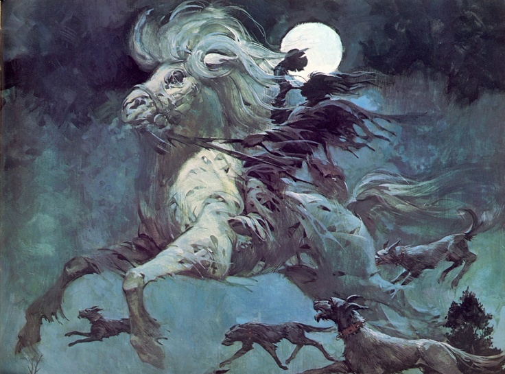

In the Halls of the Erlking
Author
By Dave Agnew, Martin Clyde, Sarah Daymond and Philippa McLoughlin
Background
The year is 1793, and Europe is at war.
Far from the front, deep in a forest that never was and always will be, the affairs of mortal men seem all but forgotten as the Wild Hunt prepares to ride and the Erlking holds Court.
In attendance are the great Houses of the Fae who seek to win his favour and ride beside him; Emissaries of England and France who will test their luck and bid for help in war; The Goblins of his court - rough, cunning, unforgiving of weakness; And the mortal youths he has selected - one will bear his flag and the rest will be turned out into the forest, the first victims of the Hunt.
Later the horns will sound and the Hunt will ride forth. For now, they gather, in hope, in fear, in celebration. The torches are lit. The first blood has been spilled. The Halls of the Erlking have opened.

Costuming
Costuming for the game is as varied as the characters themselves. Players might be costuming anything from an officer in Nelson's navy or a French peasant to the habiliments of one of the many varieties of fae - perhaps an elegant Sidhe, goblin, pixie, or an Arthurian hero. There will be costuming challenges for those who enjoy them, as well as simpler costumes for those who'd rather spend less time on it.
Restrictions
Please note, this game is a hard R16 due to dark themes and subject matter.
About
“All the leaves are yellow,
All the grass is brown.
All the nights are longer,
Sun goes down.
Crows are in the branches,
Wolves are in the wild.
Others in the shadows,
Goodbye, child.
--Anonymous”
In the Halls of the Erlking is a dark faerie tale larp where Napoleonic era history collides with centuries of Western European mythology and literature. Under the hospitality of the King of the Fairies the Great Houses of Avalon and the Tuatha dé gather alongside a cast of characters out of folklore and history, with a dash of Elizabethan literature and inspiration from the likes of Susanna Clarke. Drawn together by the ever-looming hunt, prepare to embark on a journey of love and loss, loyalty and betrayal, survival, temptation, trickery, and magic. Deals will be struck, heroes will fall, and not everyone will get a happily ever after.